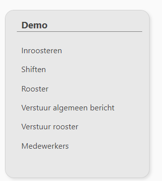
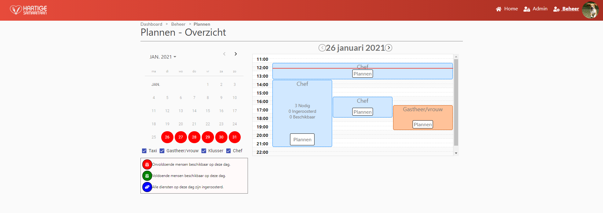
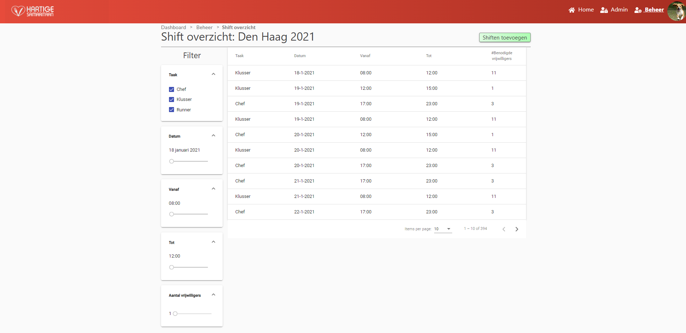
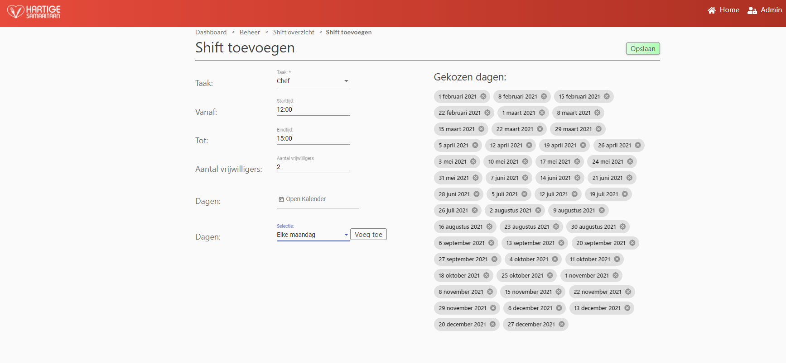
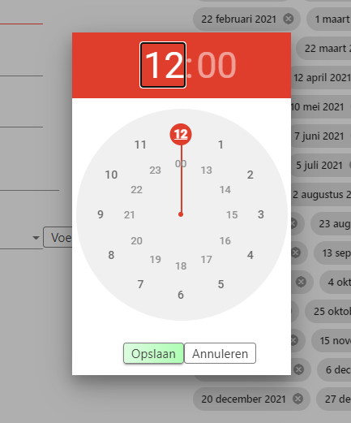
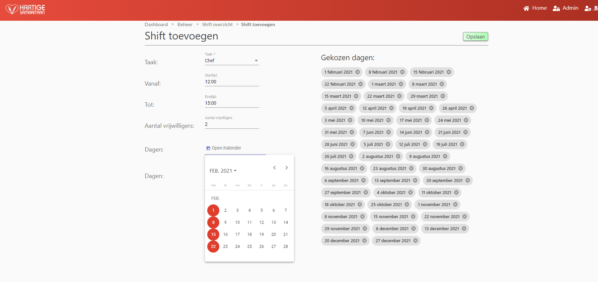
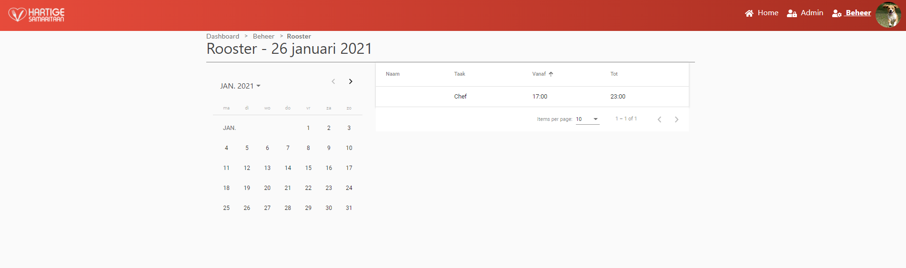
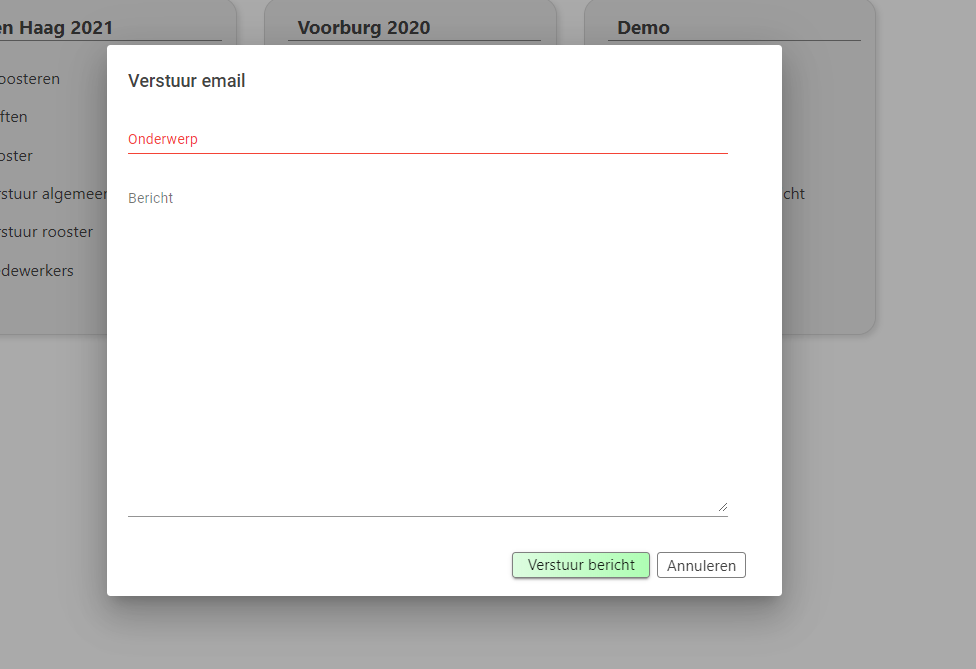
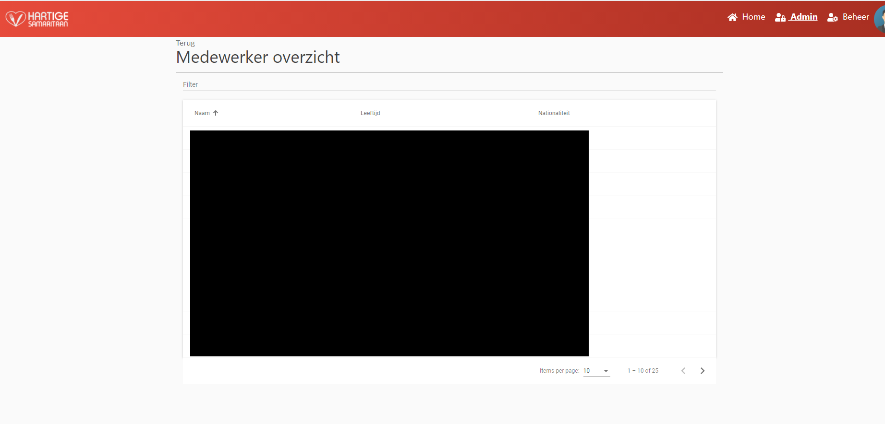

Beheer
A manager has by far the most diverse range of options on the website.
These options are all located in a manager projectcard.

Schedule overview
Clicking Inrooster will redirect the manager to a page where he can schedule people. 
On this page the manager wil get an overview of all the shifts that are planned on a given day.
By default the first day that is selected is the current day.
If the current day does not fall between the participationStartDate and the ParticipationEndDate, the participationStartDate will be used as first day.
Date selection
The manager is able to change the active dat by using the < and > buttons next to the date OR by using the mini-calendar on the left side.
In the manager is only able to select days in the mini-calendar that are within the participation-startdate and participation-enddate range AND are not in the past.
Mini-calendar
The mini-calendar uses various colors to indicate the status of shifts on the given day.
- If the date is highlighted red it means there are not enough people available to plan all shifts that day.
- If the date is highlighted green it means there are enough people available to plan all shifts that day.
- If the date is highlighted blue it means that every shift on a given day has at least one person scheduled.*
*Be careful: Blue does not indicate that enough people are scheduled on each shift that day.
Checkboxes
Below the mini-calendar are various checkboxes.
Each checkbox represent a projecttask.
Using these checkboxes, the manager is able to filter certain tasks from the overview container.
Task that are deselected will not be shown in the overview container.
If a checkbox is grayed-out, it means that, that particular task does not have any shifts on the active day.
The user is unable to select or deselect grayed-out checkboxes.
Legend
Below the mini-calendar and the checkboxes is a legend providing information about the meaning of the various colors in the mini-calendar.
overview-container
The overview container displays all shifts that are planned that day.
The container wil try to place shifts as efficiently as possible.
Whenever a task is filtered, the container will automatically readjust its layout.
Each shift can contain three pieces of information.
- The title of the shift task.
- The amount af people who are: necessary, scheduled and available.
- A button to plan the specific shift.
Depending on the length of the shift and the available screensize, the overview-container can elect to remove certain information.
- Shifts shorter then 4 hours will not display information piece #2.
- Shifts shorter then 1 hour will not display information piece #1.
- Depending on the amount of overlapping shifts, the overview-container will change the fontsize of the title.
- Depending on the length of the shift and the number of overlapping shifts, the container will change the button size.
Clicking a plan button will redirect the manager to a specific page where he can schedule people or remove people from the schedule.
Schedule shift
On this page, the manager will get a summary of the shift and a table containing all employees available to work that shift.
The summary is located on the leftside of the table and contains:
- The taskname;
- The shiftdate;
- The number of participants required for that shift;
- The number of participants already scheduled.
The table contains basic information about the participants available to work that day. The following attributes are displayed from left to right:
- First + Lastname
- Age
- Nationality
- Number of times scheduled that project.
- Number of hours schedule that week.
- The maximum number of hours the participants is willing to participate per week.
Using the checkboxes next to the name, the manager is able to select participants to be scheduled or removed* from the schedule.
*whenever the manager wants to remove a user from the schedule, he will be asked to confirm his decision.
Be careful using this feature. Users might have already gotten an email confirming that they are indeed scheduled.
No email is send whenever the user is removed from a schedule.
When the manager hovers over a specific participant, he is presented with more detailed information in a tooltip.
This information includes what other shifts the participants is available for that day, the shift(s) that the participants is scheduled for that day and a note from the user containing the preference to work with some people.
using the Opslaan button the manager is asked to confirm his selecting after which the schedule wil be definitive.
Shifts
Clicking on Shift overzicht will redirect the manager to a page where he can get an overview of the shifts of a project.

The on this page the user is able to filter shifts based on:
- Task
- Date
- Starttime
- Endtime
- Number of participants required.
Clicking on shiften toevoegen will again redirect the user to a page where he can add more shifts to the project.
Adding shifts

On this page the user is able to create multiple shifts at once. At least the following information is required for a shift to be able to be save.
- Task: selectable through a dropdown menu*;
- Starttime: selectable through a timepicker;
- Endtime: selectable through a timepicker;
- The number of participants required;
- A day or multiple days.**
*If there are no task in the dropdown menu, make sure that the project has projecttasks assigned to it (on the project page).
** Days are selectable through a calendar (see below image) or through a shortcut menu. The shortcut menu offers the following options
- Every day: selects every day from the participation-startdate through the participation-enddate
- Every Monday
- Every Tuesday
- Every Wednesday
- Every Thursday
- Every Friday
- Every Saturday
- Every Sunday
- Remove all: removes all selected dates
Timepicker

Calendar

Clicking save, when al required fields have been filled in will save the shifts and send the manager back to the shift-overview page.
See the schedule per day
Clicking Rooster will redirect the manager to a page where he can see the schedule per day. 
On this page, all users scheduled on a given day will be displayed in table form.
The manager is able to change the day by using the mini-calendar.
Clicking a row in the table will redirect the manager to the profilepage of the selected participant.
Send a general message
It is very easy to send a message to all participants of a project using this option.
When the manager clicks on Verstuur algemeen bericht, a modal will open where the user can enter a subject and a text.  After clicking Verstuur bericht the manager is asked to confirm his decision to send the message after which the modal is closed and the message is send to all participants of the project.**
** Users that have the option to receive e-mail messages turned off (in their profile) will NOT receive a general email message.
Send the schedule
Using this option, the manager is quickly able to send the current schedule to all participants who do not have the option to receive emails disabled.
Once the manager confirms his decision to send the schedule, each user will receive an email stating all the shifts the user has been scheduled for.
The email also includes an .ICS file as an attachment. The user is able to quickly add appointments to his calendar with this file.
Schedule shifts will only be send once to the user.
If the manager clicks the option again, the user will only receive an email if he has been scheduled for additional shifts since the last time he got an email.
View participant details
A manager is able to view all participants that are registered for a project by clicking Medewerkers.
The manager is then redirected to a page where all participants are displayed in table form.
Clicking a specific person on this page, will redirect the manager to the profile page of the selected user.
On this page it is possible to download the participants data as a .csv file. 